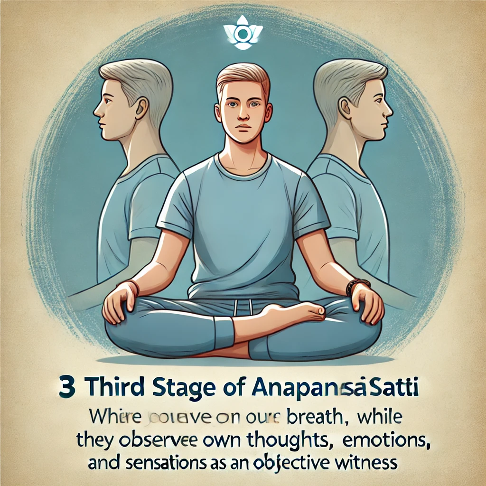

Anapanasati Yoga (Meditación de Conciencia de la Respiración)
El Anapanasati Yoga, tal como lo enseñó Osho, es una poderosa meditación de atención plena que se centra en la conciencia de la respiración mientras observas el mundo externo y a ti mismo. Sigue los pasos a continuación para una práctica equilibrada, por la mañana y por la noche, durante tres meses.
Cómo practicar: Descarga el audio y sigue estos sencillos pasos para tu meditación.
1. Primeros 10 Minutos: Enfócate en la Respiración
Siéntate cómodamente, cierra los ojos y enfócate en tu respiración natural. Observa cada inhalación y exhalación sin cambiarla ni controlarla.

2. Siguientes 10 Minutos: Conciencia de los Sonidos
Mientras sigues enfocado en tu respiración, toma conciencia de cualquier sonido externo. Permíteles existir sin que interfieran en tu enfoque interno.

3. Terceros 10 Minutos: Obsérvate a Ti Mismo
Continúa observando tu respiración, pero ahora observa también a ti mismo. Mira tus pensamientos, sentimientos y sensaciones como un observador, sin apego.
4. Últimos 10 Minutos: Observador de la Respiración y el Mundo
Continúa observando tu respiración y el mundo externo, convirtiéndote en el testigo de todo lo que ocurre a tu alrededor y dentro de ti. Deja ir el apego y solo observa.